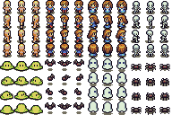
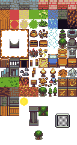
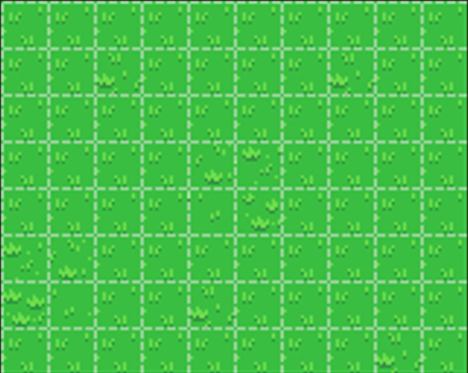

Gabriel DELPHA
Mes Projets
Comparaison d'approche algorithmique
En quoi consiste ce Projet ?
Ce projet est un jeu vidéo 2D se déroulant dans un niveau unique. Le joueur incarne un personnage qui doit parcourir la carte pour collecter toutes les pièces d’or disséminées dans la salle.
Mais la tâche n’est pas sans danger évidemment : plusieurs monstres patrouillent dans le niveau et se déplacent de manière autonome. Le joueur doit donc éviter ces ennemis à tout prix, car s’il se fait attraper, la partie est perdue.
L’objectif est simple : récupérer tous les bonus sans se faire capturer. Une fois toutes les pièces collectées, le joueur remporte la partie.
Ce projet met en œuvre les principes fondamentaux de la programmation orientée objet en C++ notamment :
- la gestion du personnage et des ennemis
- le déplacement automatique et la détection de collisions
- l’affichage graphique à l’aide de la bibliothèque SDL
Comment ça fonctionne ?


J'ai eu la possibilité d'utiliser ces deux grilles principales pour la partie visuel du projet.
La première grille contient les différents personnages que l’on peut utiliser, aussi bien pour le joueur que pour les ennemis.
La deuxième grille m’a permis d’utiliser différents éléments de décor afin de créer la carte du niveau dans laquelle le joueur se déplace.
Grâce à cette grille, j’ai pu disposer les murs, les obstacles et les éléments interactifs pour construire un environnement de jeu à la fois varié et cohérent.

Et voici ci-dessus la map représenté sous forme de quadrillage afin d’en faciliter la visualisation dans le code.
C’est sur cette grille que j’ai placé les obstacles, les murs et les différents éléments du niveau, ce qui m’a permis de structurer clairement l’espace de jeu et de gérer les déplacements et collision du joueur et des ennemis.

Voici à quoi ressemble la map avec les différents éléments. Il y a quatres classes d'éléments distinctes :
- Le joueur
- Les ennemis
- Les objets
- Les bonus (les pièces)
Démonstrations :
Le joueur gagne la partie une fois qu'il a ramassé toutes les pièces sans se faire toucher par un ennemi.
Le joueur perd la partie une fois qu'il se fait toucher par un ennemi avant d'avoir récupéré toutes les pièces.